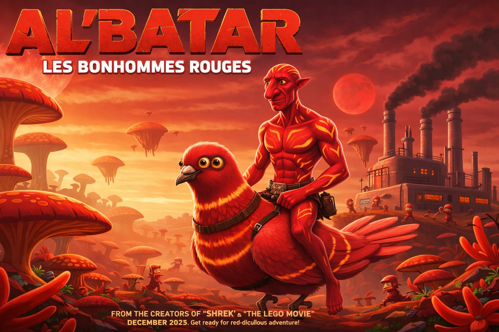

AL'BATAR - Les Bonhommes Rouges
En 2154, la Terre est à court d'énergie et l'humanité a trouvé la
solution : Vextraire l'Unobtanium, un minerai rarissime enfoui
sous la lune de Pandora.
Problème : Pandora est habitée par les
Na'vi, une civilisation de petits bonhommes rouges en
combinaison moulante, à peine plus grands qu'un enfant de 8 ans,
mais dotés d'une sagesse et d'une force spirituelle sans égale.
Pour infiltrer leur société sans éveiller les soupçons, les
scientifiques humains développent le programme Al'Batar : des
corps de bonhommes rouges télécommandés par des humains allongés
dans des caissons.
Jake Sully, un ancien marine reconverti en
téléopérateur, est recruté en urgence pour remplacer son frère
jumeau décédé d'une indigestion de cantoche spatiale. Plongé
dans la jungle de Pandora dans son petit corps rouge, Jake va
peu à peu découvrir la beauté de ce monde, la richesse de cette
civilisation... et tomber éperdument amoureux de Neytiri, une
guerrière Na'vi intrépide qui le prend d'abord pour un déchet
spatial.
Déchiré entre sa mission militaire et ses nouveaux
sentiments, Jake devra choisir son camp lors d'une bataille
épique où des bonhommes rouges de 80 centimètres affronteront
des mechas de 12 mètres. Spoiler : la taille ne fait pas tout.

PLAY